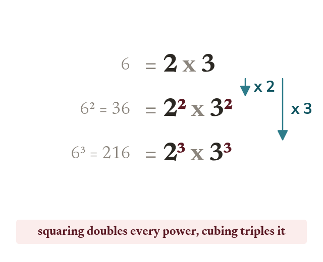
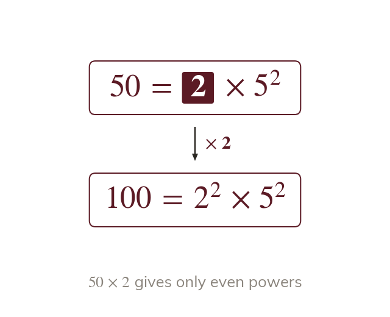
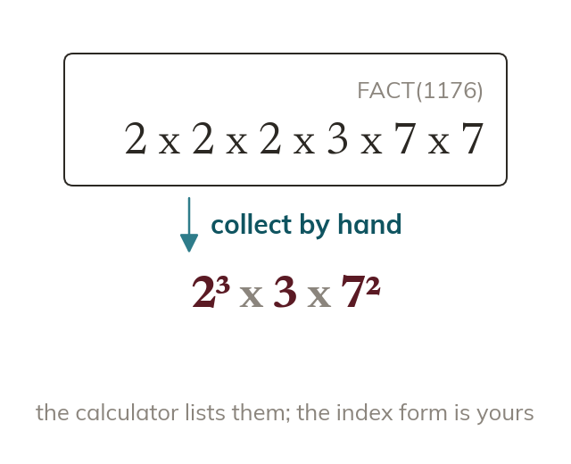
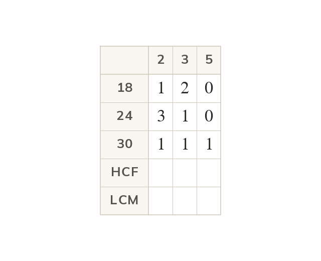
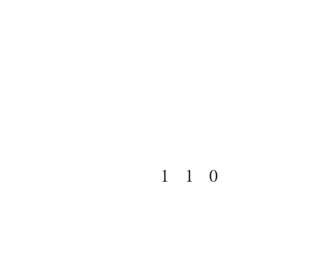
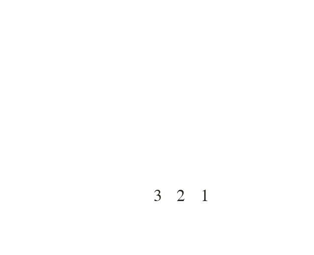
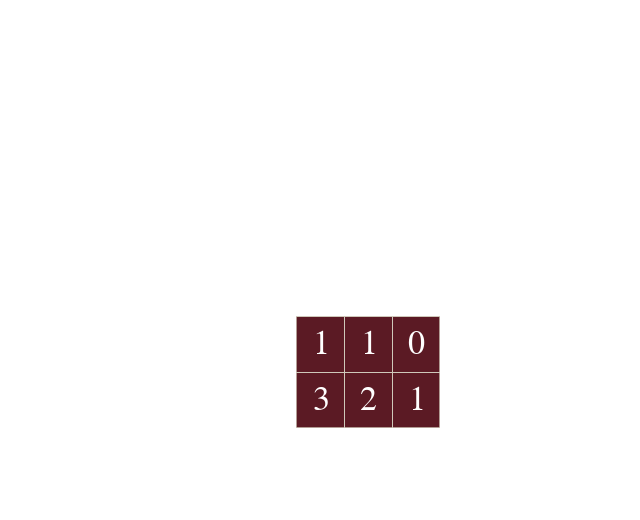

Topic 8.1 · Prime Factors and Calculation Skills · Lesson 2 of 5
What Prime Factors Reveal
A number's prime factorisation doesn't just decompose it - it reveals hidden properties, like whether it's a perfect square, and lets you handle three numbers at once instead of two. Today you'll use the pattern in the powers to spot squares and cubes, and use your calculator to decompose numbers too large to tree by hand.
By the end you’ll know…
A square number has only even powers in its prime factorisation, because squaring doubles every power.
A cube number has only powers that are multiples of three, for the same reason.
The smallest multiplier making a number square is the product of the primes whose powers are odd.
For three numbers, the HCF takes the lowest power of each prime shared by all three and the LCM the highest power of every prime appearing in any of them.
A calculator's FACT function gives a prime factorisation directly, which matters for numbers too large to tree by hand.
By the end you can
G5Use prime factor decomposition to determine whether a number is a square or a cube, and find the smallest multiplier that makes it one.
G4Use the calculator's FACT function to decompose large numbers, and find the HCF and LCM of three numbers.
Work down the page at your own pace. Write every answer in your book first, then click to check it.
01
Do Now
About 5 minutes
1
Is prime? Justify your answer by finding a factor pair.
No - so it has factors other than and
2
Write using index notation.
3
Work out and the square root of
;
4
Work out
Remember these?
LAST LESSON
Express as a product of its prime factors in index form.
LAST WEEK
The probability it rains tomorrow is What is the probability it does not rain?
LAST TERM
Reflect the point in the line
— reflecting in swaps the coordinates.
LAST YEAR
Find the mean of and
Total
02
Learn
Read each card, then follow the worked examples one step at a time.

Squares and cubes
Squaring doubles every power in the prime factorisation. A square number has only even powers. Cubing triples them, so a cube has powers in multiples of
Squaring a number doubles every power in its prime factorisation, so a square number's prime factorisation has only even powers. Cubing triples every power, so a cube number's prime factorisation has only powers that are multiples of

Smallest multiplier to make a square
Odd powers stop a number being square. Multiply by each odd-power prime once. That product is the smallest multiplier.
If a number isn't already a square, the primes with an odd power are what's stopping it. Multiplying by exactly those primes (each once) turns each odd power into the next even power - so the smallest multiplier that makes the number square is the product of the primes whose powers are odd.
SQUARE OR CUBE?
Is a square number? Is it a cube number? If not a square, find the smallest number to multiply it by to make it one.
Check squarepowers are and is even, but is odd - not every power is even, so is not a square number.
Check cubepowers are and is a multiple of but is not - not every power is a multiple of so is not a cube number.
Find the multiplierthe prime with an odd power is (power which is odd). Multiplying by one more takes its power from to which is even.
Multiply by
Check so is indeed a square number
YOUR TURN · a
Given is it square, and what smallest multiplier makes it so?
Hint. Follow the worked example: Check square → Check cube → Find the multiplier → Multiply by → Check
not a square, because the power of is odd; multiplying by gives
YOUR TURN · b
Is a square number? Is it a cube number? If not a square, find the smallest multiplier that makes it one.
Hint. check each power - even? a multiple of ?
not square ( has odd power), not cube ( is not a multiple of multiply by to get
03
Check your understanding
Pick an answer. If it's wrong, the feedback tells you which mistake it was.
Is a square number?
Not quite. Each power is which is odd. A square needs every power even.
Not quite. Matching powers isn't the test. Each power must be even, and is odd.
Not quite. You can tell from the powers every one must be even.
Yes. Both powers are which is odd, so it isn't a square number.
What is the smallest number to multiply by, to make it a square number?
Yes. needs one more and needs one more ×
Not quite. One more makes which is even. You don't need three more.
Not quite. One more of each is enough
Not quite. has a power of which is odd too. Multiply by as well.
Which of these could be a cube number, based only on its prime factorisation?
Yes. and are all multiples of so it's a cube.
Not quite. isn't a multiple of A cube needs powers like or
Not quite. The power isn't a multiple of Every power must be.
Not quite. Even powers make a square. A cube needs every power to be a multiple of
04
Practise
mark as you go
Checkpoint.Show your teacher before you go on
1.
Is a square number? Explain.
No - the power of is odd, and a square has every power even
2.
Is a cube number? Explain.
No - the power of is not a multiple of
3.
Find the smallest number to multiply by to make a square.
1
Is a square number? Is it a cube number?
Square both powers are even Not a cube and are not multiples of
2
Is a square number? Is it a cube number?
Not a square the powers are odd Cube both powers are
3
Find the smallest number to multiply by to make a square number.
The power of is odd multiply by
4
Find the smallest number to multiply by to make a cube number.
Powers must reach multiply by
5
Kim says is a cube number, because one of its powers is What is her mistake?
Every power must be a multiple of and is not is not a cube and
EXT
Is a square number, a cube number, or both? Explain.
Both is even and a multiple of It is and
05
Learn
Read each card, then follow the worked examples one step at a time.

Calculator FACT
For large numbers, the FACT key lists the prime factors. Collect the repeated primes into index form yourself.
For numbers too large to factor tree by hand, the calculator's FACT function gives the prime factorisation directly - the primes it lists still need collecting into index form by hand, since the calculator lists them as a plain product.




HCF/LCM of three numbers
The HCF takes the lowest power of each prime in all three numbers. The LCM takes the highest power of every prime in any. Shown for and
The HCF of three numbers is the product of the LOWEST power of each prime that appears in ALL THREE - a prime missing from even one of them is excluded, the same as for two numbers. The LCM is the product of the HIGHEST power of every prime appearing in ANY of the three - even a prime found in only one of them is included.
HCF AND LCM OF THREE
A calculator's FACT function decomposes as Collecting into index form
Find the HCF and LCM of and using their prime factorisations.
Factorise
Factorise
Factorise
HCFfor each prime, take the lowest power PRESENT IN ALL THREE. Prime appears in all three, lowest power is (from and Prime appears in all three, lowest power is (from and Prime appears in only one so it's excluded entirely. HCF
LCMfor each prime, take the highest power appearing in ANY of the three. Prime 2's highest power is (from Prime 3's highest power is (from Prime appears once, at power - it's still included. LCM
YOUR TURN · c
Find the HCF and LCM of and using their prime factorisations.
Hint. Follow the worked example: HCF → LCM
,,; only is in all three, at lowest power so HCF and LCM
YOUR TURN · d
Find the HCF and LCM of and using their prime factorisations.
Hint. decompose each first - ,, - then check which primes appear in ALL THREE for the HCF, and collect every prime for the LCM.
HCF not in (excluded), in all three (lowest power not in (excluded) → HCF=3 LCM
06
Check your understanding
Pick an answer. If it's wrong, the feedback tells you which mistake it was.
For the HCF of , and which primes should be included?
Not quite. isn't in HCF primes must be in all three numbers.
Not quite. The HCF uses only primes in all three. isn't in and is only in
Not quite. isn't in HCF primes must be in every number.
Yes. Only appears in all three numbers.
For the LCM of , and which primes should be included?
Not quite. Shared primes only is the HCF rule. The LCM uses every prime.
Not quite. Take the highest power of each prime and
Yes. The LCM uses every prime from any of the numbers and
Not quite. The LCM needs every prime from any of the numbers, so include
A calculator's FACT function shows for a number. What is the correct index form?
Not quite. Collect the repeats into powers three s and two s.
Yes. Three s and two s
Not quite. Count each prime separately three s and two s.
Not quite. There are three s and two s, so it's
07
Practise
mark as you go
Checkpoint. A calculator's FACT key gives as and Show your teacher before you go on
1.
Write in index form.
2.
Find the HCF of all three.
the lowest power of each prime in all three
3.
Find their LCM.
the highest power of each prime
1
A calculator's FACT function gives as Write in index form. Is it a square number?
Yes every power is even
2
Find the HCF and LCM of and
,,HCF; LCM
3
Raj says the LCM of and is What is his mistake? Find the LCM.
is a common multiple, not the lowest LCM
4
A calculator's FACT function gives as Write in index form.
5
Three lights flash every and seconds. They flash together at the start. When do they next flash together?
,, LCM seconds
EXT
Find the HCF and LCM of and
HCFthe lowest power of each shared primeLCMthe highest power of every prime
08
Exit ticket
On paper, on your own, then check
1
Explain why a cube number's prime factorisation can only have powers that are multiples of
A cube number is for some integer so every prime in n's factorisation has its power multiplied by when cubed - meaning every power in the result must be a multiple of
2
Is a square number? Is it a cube number? Explain how you know from the powers alone.
Square yes, because both powers ( and are even Cube no, because neither power is a multiple of
3
Find the HCF and LCM of , and
HCF (lowest power of each prime present in all three) LCM (highest power of each prime appearing in any of them)
Finished? Next lesson: 8.1.3 Using Known Calculations.
09
How did it go?
Be honest: it's just for you
For each skill, tap the one that is true for you today. Your Revise pages start with anything you mark Not yet.
Use prime factor decomposition to determine whether a number is a square or a cube, and find the smallest multiplier that makes it one.
Use the calculator's FACT function to decompose large numbers, and find the HCF and LCM of three numbers.
Your ratings are saved on this device only.
Practise more
After the lesson, or whenever you want more
Dr Frost
Log in, then search for a code to practise that skill.
164bKnow the properties of the prime factorisation of a square or cube number.
162eDetermine the Highest Common Factor (HCF) of more than numbers by prime factorising.
162fDetermine the Lowest Common Multiple (LCM) of more than numbers by prime factorising.